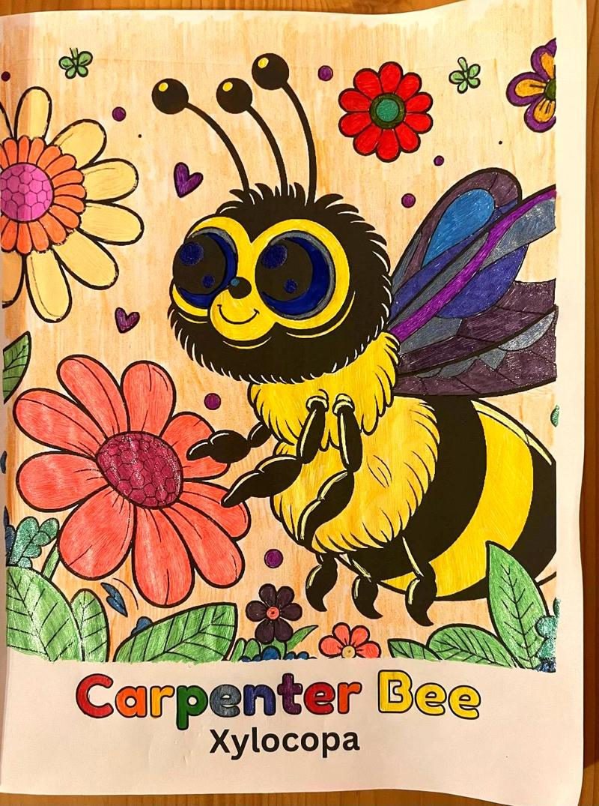

Colored by Frani Green, Atlanta, GA

Colored by Frani Green, Atlanta, GA
What families are saying about the Earth’s Pollinators coloring books:
“My 4-year-old wakes up asking to color more pages from this book. She already knows what a bee balm is!” – Jamie R.
“As a homeschool mom, I’m obsessed with how well this book blends art and science. 10/10!” – Danielle K.
“This was a hit at our Earth Day event. We printed a few pages as samples and kids couldn’t get enough!” – Mara N.
“The line art is so clean and joyful — even my 10-year-old enjoyed coloring with her little brother.” – Lucas A.
“It’s rare to find a book that sparks both curiosity and creativity. We learned *so much*!” – Priya C.
Colored by Frani Green, Atlanta, GA
Colored by Frani Green, Atlanta, GA